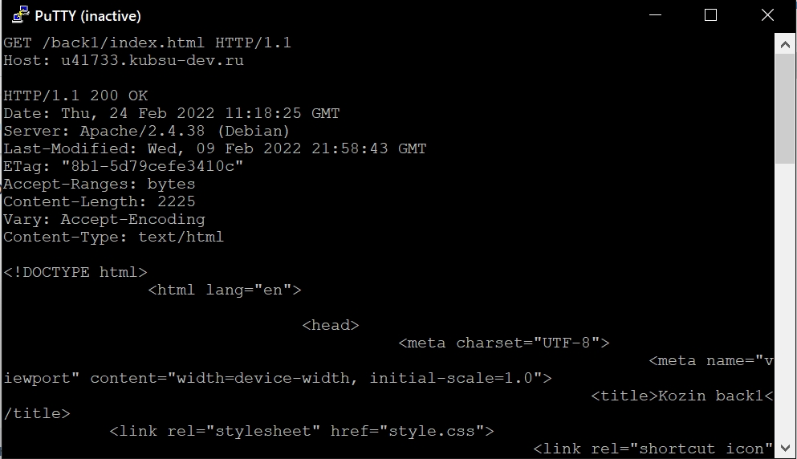
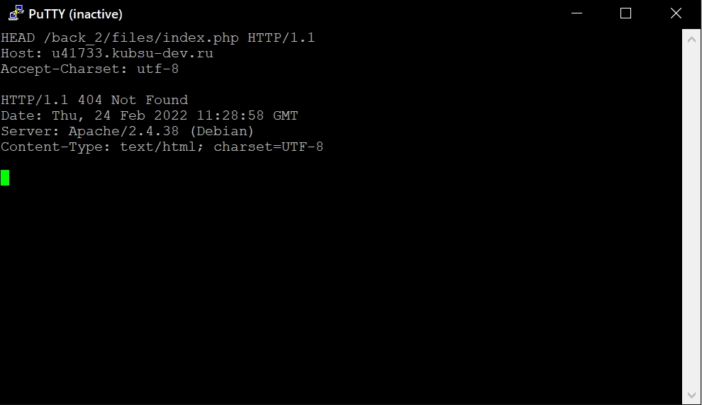

Программа putty
Главная страница методом GET в протоколе HTTP 1.0
Внутренняя страница методом GET в протоколе HTTP 1.1
Размер файла file.tar.gz, не скачивая его
Медиатип ресурса /image.png
Комментарий на сервер по адресу /index.php
Первые 100 байт файла /file.tar.gz
Кодировка ресурса /index.php
Информация
GET — метод для чтения данных с сайта.
POST — метод для отправки данных на сайт.
HEAD — метод аналогиченый методу GET, за исключением того, что сервер ничего не посылает в информационной части ответа. Метод HEAD запрашивает только информацию заголовка о файле или ресурсе. Этот метод используется, когда клиент хочет найти информацию о документе, не получая его.
HTTP — протокол прикладного уровня передачи данных, изначально — в виде гипертекстовых документов в формате HTML, в настоящее время используется для передачи произвольных данных.
HTTP 1.1 отличается от HTTP 1.0 поддержкой прокси и поля Host, опциями метода, кешированием и тд...